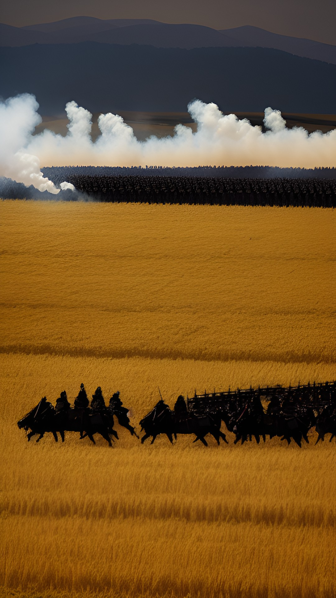

Exército a vista!

Ao ser convocado para as tropas de conquista você lembrou dos momentos que guerreou para seu senhor, e uma nostalgia tomou conta de
seu ser. Não se sabe se foi por esse motivo, mas tornará-se capitão do exército, guiando sua legião para à conquista!
No meio do caminho para as Terras Santas você avista um grupo pequeno de soldados islâmicos. O que escolherá?